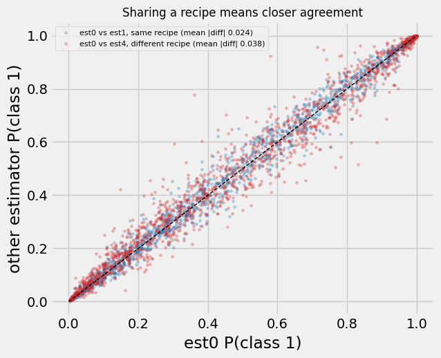
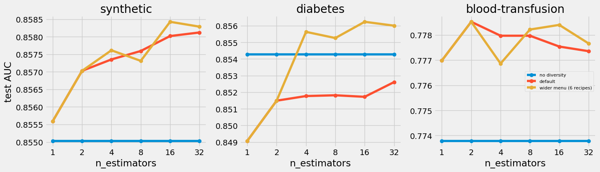
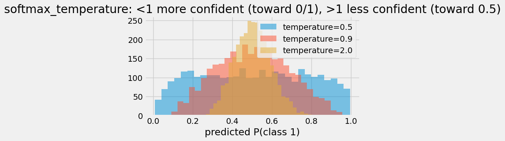

A field guide to TabPFN inference settings: estimators, calibration, fit modes, model paths, and preprocessing overrides.
With a gradient-boosting model you spend real effort searching hyperparameters: tree depth, learning rate, number of trees, number of leaves, minimum number of instances in leaf, subsample, column sample, regularization. With TabPFN that search is gone. The model is pretrained, its weights are fixed, and there is no train-time fit to tune. What is left is a short list of inference settings, and the defaults are strong.
This notebook tours them, measures the few that actually move the needle, and shows how to inspect what TabPFN inferred about your data.
Where the actual “search” really happens is in the context creation, but this is not covered here.
Show code
import warningswarnings.filterwarnings("ignore")import timeimport numpy as npimport pandas as pdimport matplotlib.pyplot as pltplt.style.use('fivethirtyeight')from sklearn.metrics import roc_auc_score, average_precision_score, precision_score, recall_scorefrom sklearn.model_selection import train_test_splitfrom sklearn.datasets import fetch_openmlfrom tabpfn import TabPFNClassifierdef make_data(n=6000, n_features=12, noise=1.5, positive_rate=None, seed=0):"""A synthetic binary task with a nonlinear signal plus noise.""" rng = np.random.RandomState(seed) X = rng.randn(n, n_features) signal = X[:, 0] * X[:, 1] + X[:, 2] **2- X[:, 3] * X[:, 4] +0.8* X[:, 5] logit = signal + noise * rng.randn(n)if positive_rate isNone: label = (logit > np.median(logit)).astype(int) # balancedelse: label = (logit > np.quantile(logit, 1- positive_rate)).astype(int) table = pd.DataFrame(X, columns=[f"x{i}"for i inrange(n_features)])return table, labeldef load_openml_binary(name, n_cap=2500, seed=0):"""Load a binary OpenML dataset as numeric features and 0/1 labels, subsampled for speed.""" data = fetch_openml(name=name, version=1, as_frame=True) X = data.frame.drop(columns=[data.target.name]).select_dtypes(include=[np.number]).astype(float) y = pd.factorize(data.target)[0]iflen(X) > n_cap: index = np.random.RandomState(seed).permutation(len(X))[:n_cap] X, y = X.iloc[index].reset_index(drop=True), y[index]return X, ydef expected_calibration_error(y_true, probabilities, bins=15):"""Average gap between predicted confidence and actual outcome frequency. Predictions are sorted into equal-width probability bins. Within each bin we compare the average predicted probability against the actual fraction of positives, then average those gaps, weighting each bin by how many predictions fall in it. Lower is better calibrated. """ bin_edges = np.linspace(0, 1, bins +1) bin_numbers = np.clip(np.digitize(probabilities, bin_edges) -1, 0, bins -1) calibration_gap =0.0for b inrange(bins): in_bin = bin_numbers == bif in_bin.any(): average_prediction = probabilities[in_bin].mean() actual_frequency = y_true[in_bin].mean() calibration_gap += in_bin.mean() *abs(actual_frequency - average_prediction)return calibration_gap
Parameter map
Every TabPFN inference setting, with its default and when you would reach for it:
Parameter (default)
What it controls
When to touch it
n_estimators (8)
how many differently-preprocessed copies of the data are ensembled. When you feed TabPFN, data gets preprocessed, each estimator has its own preprocessing pipeline
lower for speed, higher for a small accuracy bump
softmax_temperature (0.9)
sharpen or soften the predicted probabilities
calibration, fixed-threshold decisions
balance_probabilities (False)
reweight outputs toward balanced classes
imbalanced data, to move the operating point
average_before_softmax (False)
average estimator logits before the softmax, not after
many classes or calibration, with n_estimators > 1
categorical_features_indices (None)
which columns are treated as categorical
when auto-detection mis-types a column
ignore_pretraining_limits (False)
allow data beyond the recommended size
many rows or features (expect some degradation)
inference_config (None)
override the internal preprocessing. This is where all of the preprocessing choices can be made
post-hoc calibration and threshold tuning for a metric
when you optimize a specific metric
differentiable_input (False)
make the preprocessing differentiable
explainability, prompt-tuning
random_state (0)
reproducibility
already fixed to 0 by default
show_progress_bar (False)
progress bar during inference
long runs
The defaults are strong almost everywhere. The next cells measure the ones that actually move accuracy or the clock, then show how to read and override the rest.
Preprocessing: n_estimators and inference_config
The most important section. TabPFN’s “ensemble” comes from differently-preprocessed views of the data, the predictions are then averaged.
“Ensemble” parameters:
n_estimators = how many views are averaged.
inference_config = what each view is (scaling recipe, categorical handling, and what makes one view differ from the next).
The rest of the section opens the ensemble up: one view, how much the views disagree, how many you need, what the transforms do, and what keeps the views from collapsing into copies.
Each estimator sees a different view
After .fit(), each estimator is a TabPFNEnsembleMember in clf.executor_.ensemble_members with its own recipe and fitted pipeline. The cell below reads them off a default 8-estimator model.
Show code
# Inspect the ensemble TabPFN actually built. After .fit(), each estimator is a TabPFNEnsembleMember on# clf.executor_.ensemble_members, carrying its config and its fitted preprocessing pipeline. We print the# recipe, the per-estimator column shift, the class permutation, and the fitted step names.X, y = make_data(n=4000, seed=0)X_train, X_test, y_train, y_test = train_test_split(X, y, test_size=0.4, random_state=0, stratify=y)inspect_model = TabPFNClassifier(n_estimators=8, random_state=0).fit(X_train, y_train)for index, member inenumerate(inspect_model.executor_.ensemble_members): config = member.config recipe = config.preprocess_configprint(f"est{index}: {recipe.name:24s} cat={recipe.categorical_name:38s} "f"shift={config.feature_shift_count} class_perm={config.class_permutation.tolist()}")fitted_steps = [type(step).__name__for step, _ in inspect_model.executor_.ensemble_members[0].cpu_preprocessor.steps]print("\nfitted steps (the same three for every estimator):", fitted_steps)
squashing scaler: robust-center, then soft-clip. \(z=\dfrac{x-q_{50}}{q_{75}-q_{25}}\), \(x_{\text{out}}=\dfrac{z}{\sqrt{1+(z/B)^2}}\), \(B=3\). Outliers saturate smoothly into \([-3,3]\); \(\pm\infty\to\pm B\), NaN kept.
SVD (svd_quarter_components): append the top \(k=\max\!\left(1,\ \min(\lfloor n/10\rfloor+1,\ \lfloor p/4\rfloor)\right)\) components of \(X=U\Sigma V^{\top}\) as extra columns; the originals stay.
quantile \(\to\) uniform: map each feature through its empirical CDF \(\hat F\) to \([0,1]\) (a rank transform).
categoricals: numeric passes integer codes through as-is; ordinal, shuffled ordinal-encodes, then permutes the code-to-category map per estimator so no fake ordering leaks.
Then every estimator runs the same 3 fitted steps: drop-constant-columns \(\to\) reshape-distributions \(\to\) encode-categoricals.
The eight are not copies. How much do their predictions differ, and does sharing a recipe matter? The next cell reads each estimator’s probabilities separately.
Show code
# How much do the per-estimator predictions actually differ, and does sharing a recipe matter? We read# every estimator's P(class 1) off the same fitted model and look two ways: a scatter of a same-recipe pair# against a different-recipe pair, and, for the rows the estimators disagree on most, the eight predictions# behind each averaged one.import torchdef per_estimator_positive_proba(model, X):"""P(class 1) from each estimator separately, shape (n_estimators, n_samples).""" logits = model._raw_predict(X, return_logits=False, return_raw_logits=True)return torch.softmax(logits / model.softmax_temperature, dim=-1)[:, :, 1].cpu().numpy()proba = per_estimator_positive_proba(inspect_model, X_test)recipe_names = [member.config.preprocess_config.name for member in inspect_model.executor_.ensemble_members]is_quantile = np.array(["quantile"in name for name in recipe_names])fig, ax = plt.subplots(1, 2, figsize=(13, 5.4))same_diff = np.abs(proba[0] - proba[1]).mean()cross_diff = np.abs(proba[0] - proba[4]).mean()ax[0].scatter(proba[0], proba[1], s=7, alpha=0.30, color="#1f77b4", label=f"est0 vs est1, same recipe (mean |diff| {same_diff:.3f})")ax[0].scatter(proba[0], proba[4], s=7, alpha=0.30, color="#d62728", label=f"est0 vs est4, different recipe (mean |diff| {cross_diff:.3f})")ax[0].plot([0, 1], [0, 1], "k--", lw=1)ax[0].set_xlabel("est0 P(class 1)"); ax[0].set_ylabel("other estimator P(class 1)")ax[0].set_title("Sharing a recipe means closer agreement", fontsize=12)ax[0].legend(fontsize=8, loc="upper left")spread = proba.max(0) - proba.min(0)most_disagreed = np.argsort(spread)[::-1][:14]most_disagreed = most_disagreed[np.argsort(proba[:, most_disagreed].mean(0))]for slot, row inenumerate(most_disagreed): ax[1].plot([proba[~is_quantile, row].mean(), proba[is_quantile, row].mean()], [slot, slot], color="0.7", lw=1, zorder=0) ax[1].scatter(proba[~is_quantile, row], [slot] *int((~is_quantile).sum()), color="#1f77b4", s=34, alpha=0.85, label="squashing estimators"if slot ==0elseNone) ax[1].scatter(proba[is_quantile, row], [slot] *int(is_quantile.sum()), color="#d62728", s=34, alpha=0.85, label="quantile estimators"if slot ==0elseNone) ax[1].scatter([proba[:, row].mean()], [slot], color="k", marker="|", s=220, zorder=3, label="ensemble mean"if slot ==0elseNone)ax[1].set_yticks([]); ax[1].set_xlabel("P(class 1) per estimator"); ax[1].set_ylabel("14 most-disagreed test rows")ax[1].set_title("One prediction is eight estimators averaged", fontsize=12)ax[1].legend(fontsize=8, loc="lower right")fig.tight_layout(w_pad=2.0)plt.show()

Same labels, so the marginal output distributions are nearly identical (each estimator averages about 0.49, std about 0.32). The difference is per row:
left: the same-recipe pair (blue) hugs the diagonal; the different-recipe pair (red) scatters wider. Swapping squashing for quantile moves a prediction more than reshuffling columns does.
right: the 14 most-disagreed rows. Typical rows keep the 8 estimators within about 0.08; here they span 0.3 or more of probability. Black tick = the average TabPFN reports.
Averaging these views is the job of n_estimators. How many do you need?
How many views: n_estimators
More estimators = a lower-variance average, at a compute cost that grows with the count. The accuracy gain saturates fast (dataset-dependent, no universal number). The default 8 sits past saturation; drop to 1 or 2 for speed, raise for a marginal, diminishing gain.
Show code
# Accuracy saturates with n_estimators, but is that a quirk of one synthetic task? Sweep several# datasets of different size and difficulty. We warm up once per dataset so timing is not measured here.datasets = {"synthetic (n=4000)": make_data(n=4000, seed=0)}for name in ["credit-g", "diabetes", "blood-transfusion-service-center"]: datasets[name] = load_openml_binary(name)estimator_counts = [1, 2, 4, 8, 16]rows = []for dataset_name, (X, y) in datasets.items(): X_train, X_test, y_train, y_test = train_test_split(X, y, test_size=0.4, random_state=0, stratify=y) TabPFNClassifier(n_estimators=1, random_state=0).fit(X_train, y_train).predict_proba(X_test) # warm up record = {"dataset": dataset_name}for n_estimators in estimator_counts: model = TabPFNClassifier(n_estimators=n_estimators, random_state=0).fit(X_train, y_train) record[f"n={n_estimators}"] =round(roc_auc_score(y_test, model.predict_proba(X_test)[:, 1]), 4) rows.append(record)auc_table = pd.DataFrame(rows).set_index("dataset")print(auc_table.to_string())fig, ax = plt.subplots(figsize=(7.5, 4))for dataset_name in auc_table.index: ax.plot(estimator_counts, auc_table.loc[dataset_name].values, marker="o", label=dataset_name)ax.set_xlabel("n_estimators"); ax.set_ylabel("test AUC"); ax.set_xticks(estimator_counts)ax.set_title("Accuracy vs n_estimators, across datasets")ax.legend(loc="center left", bbox_to_anchor=(1.01, 0.5), fontsize=9)fig.tight_layout(); plt.show()
# The cost side: time grows with the estimator count, each one is another pass over the data.X, y = make_data(n=4000, seed=0)X_train, X_test, y_train, y_test = train_test_split(X, y, test_size=0.4, random_state=0, stratify=y)TabPFNClassifier(n_estimators=1, random_state=0).fit(X_train, y_train).predict_proba(X_test) # warm upfor n_estimators in [1, 4, 16]: start = time.perf_counter() TabPFNClassifier(n_estimators=n_estimators, random_state=0).fit(X_train, y_train).predict_proba(X_test)print(f"n_estimators={n_estimators:2d}: {time.perf_counter() - start:.2f}s")
On the default preprocessing, the shape is the same on every dataset: accuracy is settled by 2 to 4 estimators, 4 to 16 adds a few thousandths at most, and time grows roughly linearly with the count. But is “2 to 4” a property of TabPFN, or of the default menu? An estimator only helps when its view differs from the others, and inference_config sets that diversity. The next cell varies it.
Show code
# Is "2 to 4 estimators" universal, or a property of the default menu? An estimator only helps if its view# differs from the rest, and inference_config sets that. Sweep n_estimators under three configs: no# diversity (one recipe, shifts off), the default 2-recipe menu, and a wider 6-recipe menu.from tabpfn.preprocessing import PreprocessorConfigfrom tqdm.auto import tqdmconfig_datasets = {"synthetic": make_data(n=4000, seed=0),"diabetes": load_openml_binary("diabetes"),"blood-transfusion": load_openml_binary("blood-transfusion-service-center")}diverse_menu = [ PreprocessorConfig(name="squashing_scaler_default", categorical_name="numeric", global_transformer_name="svd_quarter_components"), PreprocessorConfig(name="quantile_uni", categorical_name="numeric"), PreprocessorConfig(name="safepower", categorical_name="numeric"), PreprocessorConfig(name="none", categorical_name="numeric"), PreprocessorConfig(name="quantile_norm", categorical_name="numeric", global_transformer_name="svd_quarter_components"), PreprocessorConfig(name="robust", categorical_name="numeric"),]diversity_configs = {"no diversity": {"PREPROCESS_TRANSFORMS": [PreprocessorConfig(name="quantile_uni", categorical_name="numeric")],"FEATURE_SHIFT_METHOD": None, "CLASS_SHIFT_METHOD": None},"default": {},"wider menu (6 recipes)": {"PREPROCESS_TRANSFORMS": diverse_menu},}estimator_grid = [1, 2, 4, 8, 16, 32]config_rows = []for data_name, (X, y) in tqdm(config_datasets.items(), desc="n_estimators x config"): X_train, X_test, y_train, y_test = train_test_split(X, y, test_size=0.4, random_state=0, stratify=y)for config_name, cfg in diversity_configs.items():for n in estimator_grid: model = TabPFNClassifier(n_estimators=n, random_state=0, inference_config=cfg).fit(X_train, y_train) auc = roc_auc_score(y_test, model.predict_proba(X_test)[:, 1]) config_rows.append({"dataset": data_name, "config": config_name, "n_estimators": n, "auc": auc})config_sweep = pd.DataFrame(config_rows)fig, axes = plt.subplots(1, 3, figsize=(15, 4.5))for ax, data_name inzip(axes, config_datasets): sub = config_sweep[config_sweep.dataset == data_name]for config_name in diversity_configs: line = sub[sub.config == config_name].sort_values("n_estimators") ax.plot(line.n_estimators, line.auc, marker="o", label=config_name) ax.set_xscale("log", base=2); ax.set_xticks(estimator_grid); ax.set_xticklabels(estimator_grid) ax.set_title(data_name); ax.set_xlabel("n_estimators")axes[0].set_ylabel("test AUC"); axes[-1].legend(fontsize=8)fig.tight_layout(); plt.show()

Three configs, same sweep:
no diversity (one recipe, feature and class shifts off): flat. Every n gives the same AUC; the extra estimators are wasted.
default (the two-recipe menu): saturates by 2 to 4.
wider menu (six varied recipes): keeps climbing to about 16, and peaks a little higher.
So the saturation point is not a law; it tracks how diverse the views are. The practical rule, qualified: 8 is a safe default for the default menu, a richer menu rewards more estimators, and no diversity wastes them. (Clear on synthetic and diabetes; blood-transfusion is too small and noisy to separate the curves.)
What each view does: inference_config
inference_config is the door to the preprocessing. The cell below prints the default menu (the two recipes the estimators draw from), then overrides it with a single transform, the same hook the scaling and categorical chapters use.
Show code
from tabpfn.preprocessing import PreprocessorConfigsample = pd.DataFrame(np.random.RandomState(0).randn(200, 5), columns=list("abcde"))sample_label = (sample["a"] >0).astype(int)default_model = TabPFNClassifier(n_estimators=2, random_state=0).fit(sample, sample_label)print("Default preprocessing pipeline (TabPFN draws from these across estimators):")for transform in default_model.inference_config_.PREPROCESS_TRANSFORMS:print(" ", transform)custom_model = TabPFNClassifier( n_estimators=2, random_state=0, inference_config={"PREPROCESS_TRANSFORMS": [PreprocessorConfig(name="quantile_uni_coarse")]},).fit(sample, sample_label)print("\nOverridden to a single quantile transform:")for transform in custom_model.inference_config_.PREPROCESS_TRANSFORMS:print(" ", transform)
Default preprocessing pipeline (TabPFN draws from these across estimators):
squashing_scaler_default_cat:ordinal_very_common_categories_shuffled_max_feats_per_est_200_global_transformer_svd_quarter_components
quantile_uni_cat:numeric_max_feats_per_est_200
Overridden to a single quantile transform:
quantile_uni_coarse_cat:none_max_feats_per_est_500
So inference_config either replaces the menu outright (above) or overrides one setting: the outlier-clip width, the categorical-detection thresholds, and so on. Keys are validated, an unknown one raises rather than failing silently. Rarely touched in practice; it is the hook the scaling and categorical chapters use.
What keeps the views different
Identical preprocessing \(\Rightarrow\) averaging buys nothing. Within one recipe the copies differ mostly by column order. Turn that off and they collapse.
Show code
# Turn the column reordering off and watch the redundant copies collapse. Using per_estimator_positive_proba# from above, we compare a same-recipe pair (est0 vs est1) against a different-recipe pair (est0 vs est4),# with FEATURE_SHIFT_METHOD on (the default "shuffle") and off (None).rows = []for shift_method in ["shuffle", None]: model = TabPFNClassifier(n_estimators=8, random_state=0, inference_config={"FEATURE_SHIFT_METHOD": shift_method}).fit(X_train, y_train) proba = per_estimator_positive_proba(model, X_test) rows.append({"FEATURE_SHIFT_METHOD": str(shift_method),"|est0-est1| same recipe": round(float(np.abs(proba[0] - proba[1]).mean()), 4),"|est0-est4| diff recipe": round(float(np.abs(proba[0] - proba[4]).mean()), 4),"ensemble AUC": round(roc_auc_score(y_test, proba.mean(0)), 4), })print(pd.DataFrame(rows).to_string(index=False))
shift on (default "shuffle"): same-recipe estimators still differ, each sees its own random column order.
shift off (None): that pair collapses to bit-identical predictions, difference exactly 0.0000.
the different-recipe pair stays apart either way (squashing and quantile feed different numbers).
Ensemble AUC barely moves: the menu has only 2 distinct recipes, and the shift only diversifies the copies of each. Killing it makes the copies redundant but keeps the recipe-level diversity that carries the ensemble.
Mechanism (shuffle_features_step.py): "shuffle" = a fresh rng.permutation per estimator, feature_shift_count ignored; "rotate" = roll by that count; None = identity. So feature_shift_count only bites in "rotate" mode.
The diversity sources
These are what keep estimators from being copies of each other. All live in inference_config.
Setting (default)
What varies per estimator
When it fires
PREPROCESS_TRANSFORMS (2-recipe menu)
the scaling + categorical recipe
always; recipes repeat once n_estimators exceeds the menu length
FEATURE_SHIFT_METHOD ("shuffle")
column order
always; the main v3 source. "rotate" rolls by feature_shift_count, None is off
CLASS_SHIFT_METHOD ("shuffle")
which class is treated as first
always, but the weakest source in v3 (shown next)
FEATURE_SUBSAMPLING_METHOD ("auto")
the column subset
only when features exceed max_features_per_estimator (200 in the v3 menu)
SUBSAMPLE_SAMPLES (None)
the row subset
off by default; set an int or float to turn it on
Shared policies (the same for every estimator)
Setting (default)
Effect
OUTLIER_REMOVAL_STD ("auto", 12.0 for classification)
soft-clip width on the scaled numerics
FINGERPRINT_FEATURE (True)
adds a per-row hash column so identical rows stay distinguishable
POLYNOMIAL_FEATURES ("no")
optional polynomial expansion of the features
MAX_UNIQUE_FOR_CATEGORICAL_FEATURES (30)
a column with more unique values is read as numeric
MIN_UNIQUE_FOR_NUMERICAL_FEATURES (4)
a column with fewer unique values can be read as categorical
below this row count, categorical inference is skipped
random_state seeds every per-estimator draw in the first table, and n_estimators sets how many get averaged. Those two are constructor arguments, not inference_config keys.
Show code
# Is the class shift pulling any weight? Isolate it: pin a single recipe (so the menu adds no diversity)# and turn the feature shift off, leaving the class permutation as the ONLY thing that can separate# estimators. Then read it on versus off.from tabpfn.preprocessing import PreprocessorConfigsingle_recipe = [PreprocessorConfig(name="quantile_uni", categorical_name="numeric")]rows = []for class_shift in ["shuffle", None]: model = TabPFNClassifier(n_estimators=8, random_state=0, inference_config={"PREPROCESS_TRANSFORMS": single_recipe,"FEATURE_SHIFT_METHOD": None,"CLASS_SHIFT_METHOD": class_shift}).fit(X_train, y_train) proba = per_estimator_positive_proba(model, X_test) estimator_spread =float(np.abs(proba - proba.mean(0, keepdims=True)).mean()) rows.append({"CLASS_SHIFT_METHOD": str(class_shift),"estimator spread": round(estimator_spread, 5),"ensemble AUC": round(roc_auc_score(y_test, proba.mean(0)), 4), })print(pd.DataFrame(rows).to_string(index=False))# And the same on/off flip on the full default configuration (everything else left on):for class_shift in ["shuffle", None]: model = TabPFNClassifier(n_estimators=8, random_state=0, inference_config={"CLASS_SHIFT_METHOD": class_shift}).fit(X_train, y_train) auc = roc_auc_score(y_test, model.predict_proba(X_test)[:, 1])print(f"default config, CLASS_SHIFT_METHOD={str(class_shift):8s} -> AUC={auc:.4f}")
Class shift isolated (single recipe, feature-shift off):
on: estimators differ a little (spread about 0.008), AUC nudges up.
off: all 8 identical, spread exactly 0.
on the full default config, the on/off flip moves AUC by about 0.0002.
v3 has no fixed class slots, so permuting labels and un-permuting the output is close to a no-op. A real diversity source, the weakest one.
Takeaway. Each estimator = the same frozen network on a differently-prepared view; averaging lowers variance. The one knob you normally touch is PREPROCESS_TRANSFORMS (swap the recipe). Leave the rest at defaults; random_state is the only handle on the exact draws.
Which knobs actually move the output
We have the knobs; which ones change the prediction? Flip each one from its default, one at a time, and measure two things on several datasets: mean |Δp| (do the probabilities move?) and ΔAUC (does the ranking move?). Running it across datasets keeps any single one from giving a false verdict.
Show code
# Flip each preprocessing knob once from its default and measure the effect on the output, across several# datasets. mean |Δp| = how much the probabilities move; ΔAUC = whether the ranking moves.from dataclasses import replacefrom tabpfn.preprocessing import PreprocessorConfigfrom tqdm.auto import tqdmsweep_datasets = {"synthetic": make_data(n=4000, seed=0)}for name in ["credit-g", "diabetes", "blood-transfusion-service-center"]: sweep_datasets[name] = load_openml_binary(name)def knob_variants(default_menu):"""One inference_config change per knob, each starting from the default."""return {"numeric transform off": {"PREPROCESS_TRANSFORMS": [replace(c, name="none") for c in default_menu]},"outlier clip off": {"OUTLIER_REMOVAL_STD": None},"SVD off": {"PREPROCESS_TRANSFORMS": [replace(c, global_transformer_name=None) for c in default_menu]},"fingerprint off": {"FINGERPRINT_FEATURE": False},"feature reorder off": {"FEATURE_SHIFT_METHOD": None},"class permutation off": {"CLASS_SHIFT_METHOD": None},"polynomial on": {"POLYNOMIAL_FEATURES": "all"},"row subsample to 0.5": {"SUBSAMPLE_SAMPLES": 0.5}, }records = []for data_name, (X, y) in tqdm(sweep_datasets.items(), desc="knob sweep"): X_train, X_test, y_train, y_test = train_test_split(X, y, test_size=0.4, random_state=0, stratify=y) default_model = TabPFNClassifier(n_estimators=8, random_state=0).fit(X_train, y_train) default_proba = default_model.predict_proba(X_test)[:, 1] default_auc = roc_auc_score(y_test, default_proba) default_menu = default_model.inference_config_.PREPROCESS_TRANSFORMSfor knob, change in knob_variants(default_menu).items(): model = TabPFNClassifier(n_estimators=8, random_state=0, inference_config=change).fit(X_train, y_train) proba = model.predict_proba(X_test)[:, 1] records.append({"dataset": data_name, "knob": knob,"mean_abs_dp": round(float(np.abs(proba - default_proba).mean()), 4),"dAUC": round(float(roc_auc_score(y_test, proba) - default_auc), 4)})sweep = pd.DataFrame(records)print("mean |Δp| (do the probabilities move?)")print(sweep.pivot(index="knob", columns="dataset", values="mean_abs_dp").to_string())print("\nΔAUC (does the ranking move?)")print(sweep.pivot(index="knob", columns="dataset", values="dAUC").to_string())
mean |Δp| (do the probabilities move?)
dataset blood-transfusion-service-center credit-g diabetes synthetic
knob
SVD off 0.0023 0.0063 0.0115 0.0125
class permutation off 0.0015 0.0022 0.0046 0.0055
feature reorder off 0.0039 0.0071 0.0097 0.0140
fingerprint off 0.0036 0.0062 0.0069 0.0098
numeric transform off 0.0119 0.0139 0.0260 0.0160
outlier clip off 0.0000 0.0000 0.0000 0.0000
polynomial on 0.0130 0.0243 0.0190 0.0432
row subsample to 0.5 0.0238 0.0470 0.0261 0.0248
ΔAUC (does the ranking move?)
dataset blood-transfusion-service-center credit-g diabetes synthetic
knob
SVD off -0.0009 0.0007 0.0052 -0.0007
class permutation off 0.0003 -0.0001 -0.0009 -0.0002
feature reorder off 0.0009 0.0038 0.0011 -0.0001
fingerprint off -0.0006 0.0018 0.0002 -0.0005
numeric transform off -0.0012 0.0033 -0.0003 0.0005
outlier clip off 0.0000 0.0000 0.0000 0.0000
polynomial on -0.0073 -0.0041 -0.0002 0.0078
row subsample to 0.5 -0.0119 0.0128 -0.0012 0.0000
Almost every knob nudges the probabilities a little but leaves the ranking intact: TabPFN is robust to its own preprocessing. Two knobs actually move AUC, and both cut either way depending on the data:
row subsample (less context): the largest mover. The context is the model’s training data, so shrinking it can help or hurt.
polynomial features: help when there is a real interaction to expose (the synthetic set), hurt when they only add noise.
outlier clip is inert at its default: the squashing and quantile transforms already bound the data well inside 12σ, so the clip never fires (it only bites if you tighten it toward 1σ). And two knobs do not show here because the data does not exercise them: categorical encoding needs categorical columns (the Categoricals chapter), and feature subsampling only activates above 200 columns.
Calibration knobs
These two knobs matter the moment you stop ranking and start deciding. Most production uses of a classifier threshold its probability to take an action: call this customer, review this claim, hold this transaction. A cutoff like 0.5 only means “more likely than not” when the probabilities are calibrated. balance_probabilities and softmax_temperature reshape the probability distribution without touching the ranking, both are monotone transforms, so AUC and AUPRC are unchanged by construction, which means what they really move is where your threshold bites. We show this first on the shape of the output, then on a real imbalanced decision.
# softmax_temperature on a HARD, balanced task (uncertain model, so sharpen/soften shows).rng = np.random.RandomState(2)m =6000Xt = rng.randn(m, 6)logit =0.6* Xt[:, 0] +0.4* Xt[:, 1]yt = (rng.rand(m) <1/ (1+ np.exp(-logit))).astype(int)Xtr, Xte = pd.DataFrame(Xt[:m //2]), pd.DataFrame(Xt[m //2:]); ytr, yte = yt[:m //2], yt[m //2:]plt.figure(figsize=(6, 3))for t in [0.5, 0.9, 2.0]: p = TabPFNClassifier(softmax_temperature=t, random_state=0).fit(Xtr, ytr).predict_proba(Xte)[:, 1]print(f"temperature {t}: calibration error (ECE) {expected_calibration_error(yte, p):.3f}") plt.hist(p, bins=30, alpha=0.5, label=f"temperature={t}")plt.legend(); plt.xlabel("predicted P(class 1)"); plt.title("softmax_temperature: <1 more confident (toward 0/1), >1 less confident (toward 0.5)")plt.show()
temperature 0.5: calibration error (ECE) 0.110
temperature 0.9: calibration error (ECE) 0.029
temperature 2.0: calibration error (ECE) 0.056

Show code
# A real threshold decision: a marketing campaign on imbalanced data (~12% subscribe). We threshold# the probability at 0.5 to decide whom to call, and watch what the knob does to that decision.X, y = load_openml_binary("bank-marketing", n_cap=6000)X_train, X_test, y_train, y_test = train_test_split(X, y, test_size=0.4, random_state=0, stratify=y)print(f"positive (subscribe) rate: {y.mean():.3f}\n")for label, settings in [("default", {}), ("balance_probabilities=True", {"balance_probabilities": True})]: p = TabPFNClassifier(random_state=0, **settings).fit(X_train, y_train).predict_proba(X_test)[:, 1] flagged = p >=0.5print(f"{label}:")print(f" AUC {roc_auc_score(y_test, p):.3f} (ranking) "f"ECE {expected_calibration_error(y_test, p):.3f} (calibration) mean prob {p.mean():.3f}")print(f" at threshold 0.5 -> call {flagged.mean():.1%} of customers, "f"precision {precision_score(y_test, flagged, zero_division=0):.2f}, "f"recall {recall_score(y_test, flagged):.2f}\n")
positive (subscribe) rate: 0.117
default:
AUC 0.883 (ranking) ECE 0.010 (calibration) mean prob 0.110
at threshold 0.5 -> call 5.4% of customers, precision 0.62, recall 0.29
balance_probabilities=True:
AUC 0.883 (ranking) ECE 0.196 (calibration) mean prob 0.313
at threshold 0.5 -> call 28.1% of customers, precision 0.35, recall 0.83
The histograms and the campaign tell one story. The AUC is identical with and without the knob, the ranking does not move, so neither knob can “improve” a ranking metric. What moves is the operating point. The default model is well-calibrated (ECE around 0.01, mean probability near the 12% base rate), so a 0.5 cutoff calls about 5% of customers at decent precision. balance_probabilities lifts the whole distribution toward the minority class (mean probability jumps, ECE blows up past 0.1), so the same 0.5 cutoff now calls roughly five times as many people: recall soars, precision falls. That is the knob’s actual job, shifting where a fixed threshold lands.
softmax_temperature is the same lesson in the other direction: below 1 it sharpens probabilities toward 0 and 1, above 1 it softens them toward 0.5, and the default 0.9 sits near the best-calibrated point (the printed ECE is lowest there, about 0.03 against 0.11 at 0.5 and 0.06 at 2.0). Reach for either knob only when a fixed cutoff or a calibrated probability is what you actually need, never to improve AUC. (A gradient-boosting model’s scale_pos_weight is what people often expect to help ranking; this is not that.)
Speed and memory
TabPFN has no training loop, so its .fit() does something unusual: it stores your training data as the context the forward pass will condition on. fit_mode decides how much of that conditioning is precomputed and cached, which is the clearest window into how in-context learning actually runs. The preprocessing it refers to is the same ensemble we keep meeting: TabPFN builds one differently preprocessed copy of the data per estimator.
low_memory caches nothing. Every .predict() re-runs the full preprocessing, fitting the preprocessors on the training data and transforming both train and test, once per estimator, and then the forward pass. Smallest memory footprint, slowest repeated prediction.
fit_preprocessors (the default) fits the preprocessors once at .fit() and caches the transformed training data (in CPU RAM). Each .predict() then only transforms the test rows and runs the forward pass, no re-fitting of the preprocessing.
fit_with_cache does all of that and, in addition, pushes the preprocessed training context through the transformer at .fit() to compute and store its key-value cache, one per estimator. In a transformer the training rows become the keys and values that test rows attend to; caching them means a later .predict() skips recomputing the whole training context and only passes the test queries through attention. Fastest repeated prediction, at the highest memory cost (the caches sit in CPU RAM).
So the answer to “what gets recomputed” climbs in three steps: low_memory redoes the preprocessing every time, fit_preprocessors keeps the preprocessed training data, and fit_with_cache also keeps the attention representation of that data. None of the three changes a single prediction. The next cell times all three on the same data.
Show code
X, y = make_data(n=6000, seed=1)half =len(y) //2X_train, X_test, y_train, y_test = X.iloc[:half], X.iloc[half:], y[:half], y[half:]rows = []for fit_mode in ["low_memory", "fit_preprocessors", "fit_with_cache"]: start = time.perf_counter() model = TabPFNClassifier(fit_mode=fit_mode, random_state=0).fit(X_train, y_train) fit_seconds = time.perf_counter() - start start = time.perf_counter()for _ inrange(3): # repeated predictions on the same training data model.predict_proba(X_test) predict_seconds = (time.perf_counter() - start) /3 rows.append({"fit_mode": fit_mode, "fit_seconds": round(fit_seconds, 2),"predict_seconds (avg of 3)": round(predict_seconds, 2)})print(pd.DataFrame(rows).to_string(index=False))
The shape is the point. fit_with_cache pays more at .fit(), where it builds the key-value cache, and then predicts roughly twice as fast, because the expensive context conditioning is already done. low_memory and fit_preprocessors fit cheaply and pay it back at predict time. So if you score the same training data many times, fit_with_cache wins; if memory is tight or you predict only once, stay with the default. Again, none of this moves a prediction, only the clock and the memory bill.
Two more performance knobs in the same spirit, neither of which touches the output:
memory_saving_mode ("auto" by default, or True/False) batches some internal computations to avoid out-of-memory errors, and can even speed things up by easing memory pressure. Leave it on "auto", force a value only when hand-tuning a tight GPU: TabPFNClassifier(memory_saving_mode=True).
inference_precision ("auto", "autocast", or a torch.dtype) uses mixed precision for speed by default; pinning a dtype trades speed for reproducibility: TabPFNClassifier(inference_precision=torch.float32) for the most repeatable run.
Inferred settings
You do not tune the preprocessing, but you can read it. After a fit, inference_config_ holds the resolved limits and thresholds, and inferred_feature_schema_ shows the modality TabPFN assigned to each column (which is what categorical_features_indices would override).
Show code
Xq = pd.DataFrame(np.random.RandomState(0).randn(200, 5), columns=["a", "b", "c", "d", "e"])yq = (Xq["a"] >0).astype(int)model = TabPFNClassifier(random_state=0).fit(Xq, yq)print("Envelope (hard ceilings):")for field in ["MAX_NUMBER_OF_SAMPLES", "MAX_NUMBER_OF_FEATURES", "MAX_NUMBER_OF_CLASSES"]:print(f" {field} = {getattr(model.inference_config_, field)}")print("\nPreprocessing thresholds:")for field in ["MAX_UNIQUE_FOR_CATEGORICAL_FEATURES", "MIN_UNIQUE_FOR_NUMERICAL_FEATURES","MIN_NUMBER_SAMPLES_FOR_CATEGORICAL_INFERENCE", "OUTLIER_REMOVAL_STD"]:print(f" {field} = {getattr(model.inference_config_, field)}")print("\nInferred column modality (first five columns):")for feature in model.inferred_feature_schema_.features[:5]:print(f" {feature.name}: {feature.modality.value}")
The envelope is the hard ceiling the checkpoint was built for (a million rows, two thousand features, a hundred and sixty classes). Separately, ignore_pretraining_limits guards a softer recommended operating range, and pushing well past it is where accuracy starts to slip. The thresholds are the rules behind the auto-detection: a string column with 30 or fewer distinct values is treated as categorical, a numeric column needs at least 4 distinct values to stay numeric, and category inference needs at least 100 rows. Those are the knobs the scaling and categorical chapters open up through inference_config.
Those limits and the menu above come from one checkpoint, which model_path selects. "auto" (the default) downloads the v3 default classifier on first use and caches it; redirect the cache with the TABPFN_MODEL_CACHE_DIR environment variable.
The package ships more than one checkpoint, and several map onto problems we meet elsewhere in the series: a v2.5 family with large-features and large-samples variants for wide or tall data, and v3 variants tuned for different numeric priors (a low-skew and a quantiles checkpoint that connect to the skewed-variables chapter), small samples, and so on. You point at one with a filesystem path to a .ckpt, for example TabPFNClassifier(model_path="path/to/checkpoint.ckpt"); the repository README lists the exact identifiers. For almost every use the "auto" v3 default is the right answer.
Other knobs
For completeness, the settings that did not need their own section, each as a one-line example:
TabPFNClassifier(average_before_softmax=True): average the estimators’ logits before the softmax instead of their probabilities (only matters with n_estimators > 1, can help calibration and many-class problems).
TabPFNClassifier(n_preprocessing_jobs=1): CPU worker processes for preprocessing; 1 (the default) is usually best, raise it only with many cores and n_estimators > 1.
TabPFNClassifier(device="cuda"): where inference runs; "auto" picks the GPU if one is present.
TabPFNClassifier(random_state=0): the seed; TabPFN fixes it to 0 by default, unlike most scikit-learn estimators.
TabPFNClassifier(show_progress_bar=True): a progress bar during inference.
TabPFNClassifier(eval_metric="roc_auc", tuning_config=...): opt into a post-hoc search that calibrates probabilities and tunes the decision threshold for the chosen metric.
TabPFNClassifier(differentiable_input=True): make the preprocessing end-to-end differentiable, for explainability and prompt-tuning work.
Takeaways
TabPFN is pretrained, so there is no hyperparameter search. You configure inference, and the defaults are strong.
n_estimators trades compute for a small, saturating accuracy gain; the default is a sensible middle.
balance_probabilities and softmax_temperature never change the ranking (a monotone transform cannot); they shift the operating point and the calibration. Use them only if you threshold at a fixed cutoff or need calibrated probabilities.
categorical_features_indices and ignore_pretraining_limits tell TabPFN the truth about your data: which columns are categorical, and whether you are past its recommended size.
inference_config is the door to the internal preprocessing (scaling, outlier clipping, categorical thresholds), and the envelope and thresholds above are read straight off it.
The shift from gradient boosting: you are not tuning a model, you are configuring a fixed one, and most of the time the defaults are the right answer.